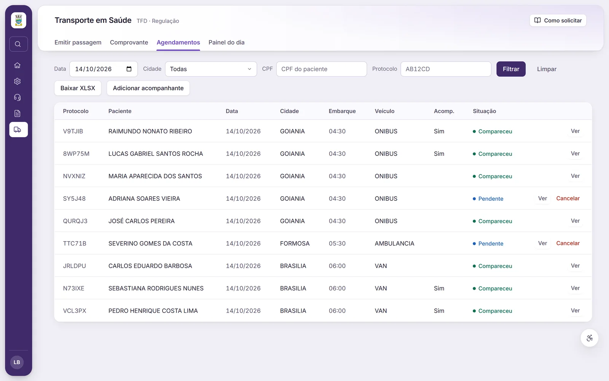
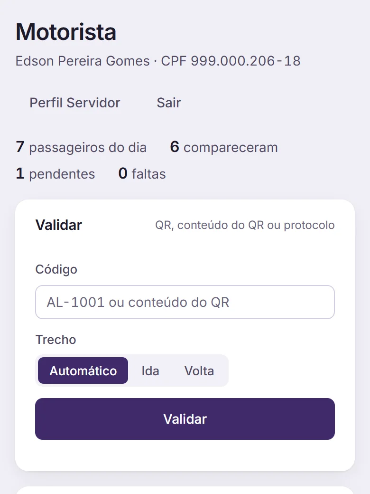

Agendamentos com protocolo
Cadastro do paciente, agendamento, atribuição, execução e cancelamento, com registro do acompanhante.
Transporte sanitário
O agendamento nasce com protocolo, o motorista valida o embarque por QR Code e a casa de apoio confirma a chegada. A gestão vê a viagem inteira.


O que o transporte faz
Cadastro do paciente, agendamento, atribuição, execução e cancelamento, com registro do acompanhante.
O QR Code é validado no embarque e na casa de apoio. Fica registrado quem embarcou e quem chegou.
No celular, o motorista vê a viagem do dia, valida os embarques e consulta o histórico.
Tela própria para receber o paciente e confirmar a chegada.
O paciente avalia o atendimento respondendo por um link.
Veículos, motoristas, viagens e notas fiscais, com relatórios em PDF e XLSX, guias e o BPA do transporte.
Como funciona
Numa demonstração com dados fictícios, seguimos uma viagem do agendamento até a chegada na casa de apoio.